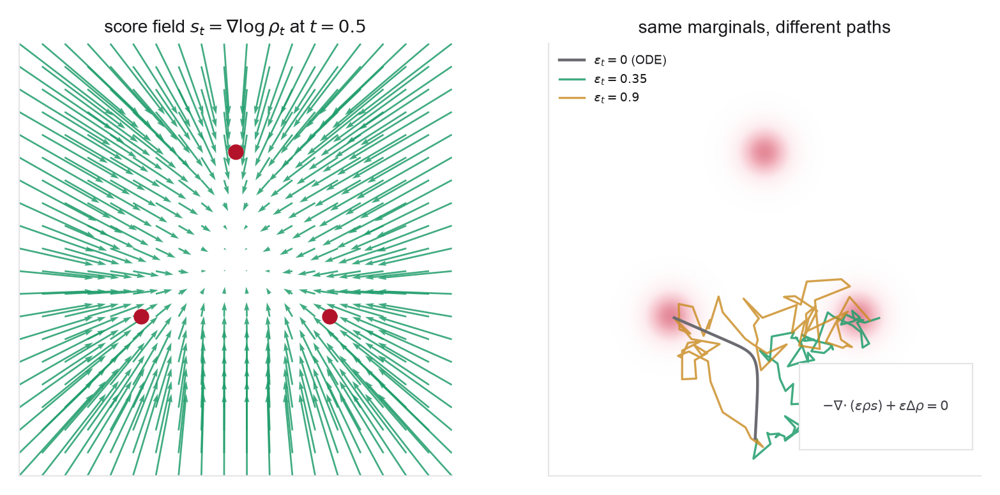

- The interpolant and its velocity from Problem 1
- The Fokker-Planck equation for an Ito SDE (Week 2)
- The reverse-time SDE and probability-flow ODE (Week 2)
- The velocity-score-denoiser dictionary for affine paths (Weeks 2-3)
- Gaussian score \(\nabla_x\log\mathcal N(x;\mu,\sigma^2 I)=-(x-\mu)/\sigma^2\)
- Stochastic Interpolants, §2.2 (score objective), §2.3 (the SDE family), and §5.1 (diffusion recovery)
- SiT, §3.2 for the swept diffusion coefficient in practice
- Week 2 Problem 1 for the reverse-time SDE and the score
- Week 3 Problem 1, part 6, for the affine velocity-score relation
Problem 1 gave the velocity and its transport equation. This problem adds the second learned field, the score, and then the result that makes the whole framework worth the name. Because the interpolant carries a Gaussian latent, its score is an elementary conditional expectation, available on the very same path as the velocity. And once you hold both fields, a one-line Fokker-Planck cancellation shows that an entire family of stochastic differential equations, one for each choice of diffusion schedule \(\epsilon_t\), shares the interpolant's marginals. The deterministic flow of Week 3 and the noising diffusion of Week 2 are the two ends of that family; everything between them is a sampler you may choose after training.
Convention and standing assumptions. As in Problem 1: base at \(t=0\), data at \(t=1\), interpolant \(x_t=\alpha_t x_0+\beta_t x_1+\gamma_t z\), marginal law \(\rho_t\) (the law of \(x_t\)), velocity \(b_t(x)=\mathbb E[\dot x_t\mid x_t{=}x]\). Write \(s_t(x)=\nabla_x\log\rho_t(x)\) for the score and \(\{W_t\}\) for a standard Brownian motion.
Throughout, \(x_1\sim q\), \(x_0\sim\mathcal N(0,I_d)\), \(z\sim\mathcal N(0,I_d)\) with \(z\perp(x_0,x_1)\), and, unless explicitly stated otherwise, \(x_0\perp x_1\). Parts 3 and 5 lean on the Gaussian base and this independence; part 6 and Problem 4 are where it is dropped. Take \(\alpha,\beta,\gamma\in C^1\big((0,1)\big)\), and assume enough decay and regularity of \(\rho_t,b_t,s_t\) to differentiate under the integral sign, integrate by parts, and discard boundary terms. All statements are for \(0<t<1\) with \(\gamma_t>0\) unless noted; where a formula divides by \(\beta_t\), assume additionally \(\beta_t\neq0\) on the interval in question (note \(\beta_0=0\), so such formulas are singular as \(t\downarrow0\)). Times are drawn \(t\sim\mathcal U(0,1)\), or from any density positive on \((0,1)\).

- The score from the latent. Condition on \((x_0,x_1)\): then \(x_t\sim\mathcal N(\alpha_t x_0+\beta_t x_1,\gamma_t^2 I)\), whose score in \(x\) is \(-(x-\alpha_t x_0-\beta_t x_1)/\gamma_t^2=-z/\gamma_t\). Using the mixture representation of \(\rho_t\) from Problem 1 part 1 and Bayes' rule, prove the score identity \[ s_t(x)=\nabla_x\log\rho_t(x)=-\frac{1}{\gamma_t}\,\mathbb E\big[z\mid x_t=x\big],\qquad 0<t<1. \] (Route: write \(\nabla_x\rho_t(x)=\mathbb E_{(x_0,x_1)}\nabla_x\mathcal N(x;\alpha_t x_0+\beta_t x_1,\gamma_t^2 I)\), turn the Gaussian gradient into \(-\!(x-\mu)/\gamma_t^2\) times the density, and recognize the posterior average of \(-z/\gamma_t\).) Note this is exactly the obstruction Problem 1 part 5 flagged: the identity needs \(\gamma_t>0\). Be careful about what is being averaged: the \(z\) inside \(\mathbb E[z\mid x_t{=}x]\) is the same latent draw that generated \(x_t\), so the expectation is over the posterior of \((x_0,x_1,z)\) given \(x_t=x\), not over a fresh independent Gaussian (whose mean would simply be zero).
- The score objective. Define the tractable per-sample objective that regresses onto the latent, \[ \mathcal L_s(\theta)=\mathbb E_{t,\,x_0,\,x_1,\,z}\big\|\eta_\theta(x_t,t)-z\big\|^2,\qquad t\sim\mathcal U(0,1), \] and show its minimizer is \(\eta_t^\star(x)=\mathbb E[z\mid x_t{=}x]=-\gamma_t s_t(x)\) for \(\mathrm dt\otimes\rho_t(\mathrm dx)\)-almost every \((t,x)\), so \(s_\theta(x,t)=-\eta_\theta(x,t)/\gamma_t\) learns the score. Identify this as the interpolant's noise-prediction objective and match it line for line to \(\epsilon\)-prediction in Week 2 Problem 1: same regression, same conditional-mean minimizer, latent \(z\) in place of the diffusion noise.
- The velocity-score dictionary. On the affine path, \(x=\alpha_t\mathbb E[x_0\mid x_t{=}x]+\beta_t\mathbb E[x_1\mid x_t{=}x]+\gamma_t\mathbb E[z\mid x_t{=}x]\) ties the three conditional expectations together. First convince yourself that this identity, the velocity of Problem 1 part 2, and the score identity of part 1 are not enough: they leave \(\mathbb E[x_0\mid x_t]\) as a free third function, so a single field determines nothing. Then supply the missing fact. Because the base \(x_0\) and the latent \(z\) are both standard Gaussian and independent of \(x_1\), conditioning on \((x_1,x_t)\) is conditioning on the single observation \(w=\alpha_tx_0+\gamma_tz\), and Gaussian regression plus the tower property give \[ \mathbb E[x_0\mid x_t{=}x]=\frac{\alpha_t}{\gamma_t}\,\mathbb E[z\mid x_t{=}x]=-\alpha_t\,s_t(x). \] Equivalently: \(\alpha_tx_0+\gamma_tz\sim\mathcal N(0,\sigma_t^2 I)\) independent of \(x_1\) with \(\sigma_t^2=\alpha_t^2+\gamma_t^2\), so \(\rho_t\) is exactly the marginal of the one-sided Gaussian path \(x_t\overset{d}{=}\beta_tx_1+\sigma_t\xi\). (The middle expression needs \(\gamma_t>0\), but the conclusion \(\mathbb E[x_0\mid x_t{=}x]=-\alpha_t s_t(x)\) is the statement \(\mathbb E[x_0\mid x_t]=(\alpha_t/\sigma_t^2)\,\mathbb E[w\mid x_t]\) for \(w=\alpha_tx_0+\gamma_tz\), and so survives the deterministic limit \(\gamma_t\to0\) as long as \(\sigma_t>0\), which is Problem 1's sharp condition. The dictionary below therefore has a valid \(\gamma_t\equiv0\) reading, in which the Gaussian base alone supplies the smoothing.) Now the count works. Show that, given the coefficients and assuming \(\beta_t\neq0\), any one of \(\{b_t,\,s_t,\,\mathbb E[x_1\mid x_t]\}\) determines the other two, and derive \[ b_t(x)=\frac{\dot\beta_t}{\beta_t}\,x+\Big[\frac{\dot\beta_t}{\beta_t}\,\sigma_t^2-\sigma_t\dot\sigma_t\Big]\,s_t(x), \qquad \sigma_t\dot\sigma_t=\alpha_t\dot\alpha_t+\gamma_t\dot\gamma_t, \] noting that \(\beta_t\neq0\) is what makes \(\mathbb E[x_1\mid x_t{=}x]=(x+\sigma_t^2s_t(x))/\beta_t\) meaningful, so the displayed formula is singular as \(t\downarrow0\) where \(\beta_0=0\). Note also that recovering \(s_t\) from \(b_t\) needs the bracket to be nonzero; verify it is, for \(\gamma_t\equiv0,\alpha_t=1-t,\beta_t=t\), where it equals \((1-t)/t\), and check that this case recovers Week 3 Problem 1 part 6. Conclude that "learn a velocity" (flow matching) and "learn a score" (diffusion) are two coordinates on one object, with the latent \(z\)-prediction as a third equivalent target. Finally, state where this breaks. The boxed step used both the Gaussianity of the base and \(x_0\perp x_1\). For a dependent coupling (Problem 1 part 6, Problem 4), \(b_t\) and \(s_t\) are genuinely independent fields, which is exactly why the framework trains two heads rather than deriving one from the other.
- The family of samplers (the key result). Suppose you hold the exact \(b_t\) and \(s_t\). Prove that for any non-negative, locally integrable schedule \(\epsilon_t\), and under the standard existence-uniqueness and endpoint-integrability assumptions that make the SDE well-posed, the forward-time SDE \[ \mathrm dX_t=\big[b_t(X_t)+\epsilon_t\,s_t(X_t)\big]\,\mathrm dt+\sqrt{2\epsilon_t}\,\mathrm dW_t,\qquad X_0\sim\rho_0, \] has time-marginals equal to \(\rho_t\). Give the one-line Fokker-Planck argument: the density of this SDE evolves by \(\partial_t\rho=-\nabla\!\cdot(\rho[b_t+\epsilon_t s_t])+\epsilon_t\Delta\rho\); substitute \(\rho=\rho_t\) and \(\rho_t s_t=\nabla\rho_t\) to see the added terms \(-\nabla\!\cdot(\epsilon_t\rho_t s_t)+\epsilon_t\Delta\rho_t\) cancel identically, leaving Problem 1's transport equation \(\partial_t\rho_t=-\nabla\!\cdot(\rho_t b_t)\). So the family all transports \(\rho_0\) onto \(q\), and \(\epsilon_t=0\) is the probability-flow ODE. Name the cancellation: \(\epsilon_t s_t\,\mathrm dt+\sqrt{2\epsilon_t}\,\mathrm dW_t\) is an overdamped Langevin move whose instantaneous invariant measure is \(\rho_t\) itself, and adding a dynamics that preserves \(\rho_t\) to one that transports \(\rho_0\mapsto\rho_t\) still transports \(\rho_0\mapsto\rho_t\). State plainly what changes and what does not: the marginals are identical across the family, the joint law of the trajectory is not, and only \(\epsilon_t=0\) gives a deterministic invertible map (hence likelihoods and latent editing). Flag one practical caveat the statement hides: \(s_t=-\eta_t^\star/\gamma_t\) blows up like \(1/\gamma_t\) at the endpoints, so the freedom in \(\epsilon_t\) is real for the exact-field PDE argument but requires \(\epsilon_t\) to decay with \(\gamma_t\) for the drift to be integrable near \(t=1\). This is why the clean statement is about the Fokker-Planck cancellation, which is pointwise in \(t\), rather than about the SDE having a solution, which is not. Problem 3 hits this immediately.
- Diffusion and flow matching as endpoints. Two reductions.
- Flow matching: the deterministic interpolant \(\gamma_t=0,\alpha_t=1-t,\beta_t=t\) sampled at \(\epsilon_t=0\) is the Week 3 velocity ODE. State it in one line.
- Diffusion: take the one-sided interpolant \(x_t=\beta_t x_1+\gamma_t z\) (drop the explicit base term and let the latent supply the noise). Note first that this changes the boundary conditions of Problem 1: with \(\alpha_t\equiv0\) the base can only come from the latent, so the ideal one-sided bridge asks for \(\gamma_0=1\) (not \(0\)) and \(\beta_0=0\), while \(\beta_1=1,\gamma_1=0\) as before. Match \(\beta_t\) and \(\gamma_t\) to a Gaussian forward schedule \(x_\tau=a_\tau x_1+\sqrt{1-a_\tau^2}\,\epsilon\) under \(\tau=1-t\), with \(a_\tau=\exp(-\tfrac12\int_0^\tau\lambda_u\,\mathrm du)\). (Write the VP noise schedule \(\lambda_\tau\), not \(\beta_\tau\) as in Week 2: here \(\beta_t\) is already the interpolant's data coefficient, and the two are different objects.) Now confront the boundary conditions honestly, because a finite-time VP diffusion does not satisfy the ideal ones, it only approximates them: this schedule gives \(\beta_0=a_1>0\) and \(\gamma_0=\sqrt{1-a_1^2}<1\), reaching \(\beta_0=0,\gamma_0=1\) only in the limit \(\int_0^1\lambda\to\infty\). The residual \(a_1>0\) is precisely the prior-mismatch error of real diffusion models: you start sampling from \(\mathcal N(0,I)\) at a time when the true \(\rho_0\) still retains an \(a_1\)-sized memory of the data. It is the one boundary condition the two-sided interpolant satisfies exactly, by construction. Then show that \(\epsilon_t=\tfrac12\lambda_{1-t}\) reproduces the reverse-time diffusion SDE of Week 2, while \(\epsilon_t=0\) gives its probability-flow ODE. (You should find \(b_t(x)=\tfrac12\lambda_{1-t}\,(x+s_t(x))\); the part-3 bracket collapses because \(\beta_t^2+\gamma_t^2=1\).)
- Why \(\epsilon_t\) is not free in practice. Parts 4-5 assume the exact fields. Argue that with a learned \(b_\theta,s_\theta\) the family no longer shares marginals exactly: write \(b_\theta=b_t+e^b_t\), \(s_\theta=s_t+e^s_t\) for small errors, and show heuristically that the stochastic term contributes a score-driven relaxation that contracts some field error (a Langevin-like error-correcting effect, so \(\epsilon_t>0\) can beat the ODE), while also injecting fresh noise and requiring more steps to integrate accurately (so too much \(\epsilon_t\) hurts). Make it quantitative (heuristically: the bound below assumes smooth densities, integration by parts with vanishing boundary terms, a shared diffusion coefficient, and a log-Sobolev inequality for \(\rho_t\)). Differentiate \(\mathcal K_t=\mathrm{KL}(\hat\rho_t\|\rho_t)\) along the two Fokker-Planck flows: the exact-field terms cancel by part 4 and what survives is a contraction \(-\epsilon_t\mathcal I_t\) (relative Fisher information) plus an error-injection term; with Young's inequality and a log-Sobolev constant \(\varkappa_t\), for \(\epsilon_t>0\), \[ \frac{\mathrm d\mathcal K_t}{\mathrm dt}\le-\varkappa_t\epsilon_t\,\mathcal K_t +\frac{1}{2\epsilon_t}\,\mathbb E\big\|e^b_t+\epsilon_te^s_t\big\|^2 . \] The restriction \(\epsilon_t>0\) is not cosmetic: the \(1/(2\epsilon_t)\) prefactor is the price of Young's inequality, and it blows up exactly as the sampler becomes deterministic. The ODE endpoint \(\epsilon_t=0\) has no contraction term at all and needs a separate argument (there the transported error is governed by the stability of the flow map, not by a relaxation rate), so do not read the bound as saying \(\epsilon_t=0\) is infinitely bad. Read off the asymmetry the informal statement hides: the noise contracts the velocity error \(e^b\) at rate \(\varkappa\epsilon\), but the large-\(\epsilon\) floor \(\mathbb E\|e^s\|^2/2\varkappa\) is set by the score error alone, because a very noisy sampler is just a Langevin chain for the learned potential. Conclude with a sharper prediction than "noise fixes errors": stochasticity repairs a field whose two heads are mutually inconsistent; it cannot repair a field that is consistently wrong (the exact fields of a wrong target), which it will instead sample faithfully. State the resulting bias-variance-cost tradeoff, and note that Problem 3 measures exactly this curve on a molecular target, including the case where \(\epsilon^\star=0\), and SiT reports it at scale.